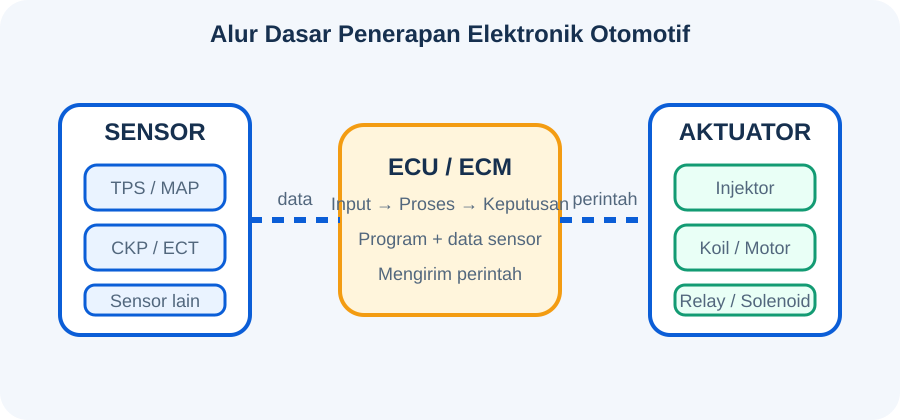
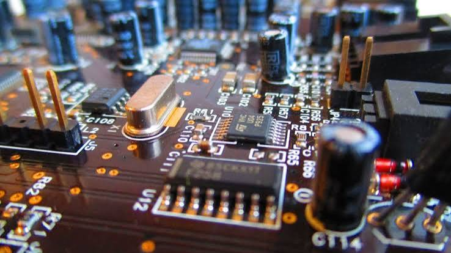

🎯 Tujuan Pembelajaran
Setelah mempelajari modul ini, siswa diharapkan mampu:
- Menjelaskan pengertian penerapan elektronik pada kendaraan.
- Menjelaskan fungsi sensor, ECU/ECM, dan aktuator.
- Mengidentifikasi contoh penerapan elektronik pada sepeda motor.
- Menjelaskan alur sederhana sensor → ECU/ECM → aktuator.
- Menjelaskan manfaat elektronik terhadap performa, efisiensi, keamanan, dan kenyamanan kendaraan.
💡 Apersepsi
Mengapa sepeda motor injeksi dapat mengatur jumlah bahan bakar tanpa pengaturan mekanis seperti karburator? Bagaimana kendaraan mengetahui putaran mesin, posisi throttle, atau temperatur mesin?
Jawabannya: kendaraan modern memanfaatkan sensor, unit kontrol elektronik, dan aktuator.
👁️ Sensor
Mendeteksi kondisi kendaraan dan mengubahnya menjadi sinyal yang dapat diproses sistem kontrol.
🧠 ECU/ECM
Mengolah informasi dari sensor dan menentukan perintah pengendalian.
⚙️ Aktuator
Menerima perintah elektronik dan menghasilkan tindakan pada sistem kendaraan.
📚 Materi Pembelajaran
1. Pengertian Elektronika Otomotif
Elektronika otomotif adalah penerapan komponen dan sistem elektronik untuk memantau, mengendalikan, dan meningkatkan kerja kendaraan. Perkembangan elektronika membuat banyak fungsi kendaraan yang sebelumnya mekanis dapat dikendalikan secara elektronik.
2. Sensor sebagai Input
Sensor mendeteksi kondisi fisik seperti posisi, putaran, tekanan, temperatur, atau kondisi lingkungan kemudian menghasilkan sinyal untuk sistem kontrol.
Mendeteksi posisi throttle.
Mendeteksi posisi/putaran poros engkol.
Mendeteksi temperatur cairan pendingin pada sistem yang menggunakannya.
Mendeteksi tekanan pada saluran masuk.
3. ECU/ECM sebagai Pengolah
ECU/ECM bekerja sebagai komputer pengendali. Data sensor diproses berdasarkan program pengendalian, kemudian ECU/ECM mengirimkan sinyal ke aktuator.
Contoh: pada sistem injeksi elektronik, informasi sensor digunakan untuk membantu menentukan pengendalian injeksi dan fungsi mesin.
4. Aktuator sebagai Output
Aktuator mengubah perintah elektronik menjadi tindakan fisik. Contohnya injektor, koil pengapian, motor listrik, relay, dan solenoid, sesuai sistem kendaraan.
5. Penerapan Elektronik pada Sepeda Motor
| Sistem | Contoh penerapan elektronik | Manfaat |
|---|---|---|
| Mesin | EFI, ECU/ECM, sensor, injektor | Pengendalian mesin lebih presisi dan efisien |
| Pengapian | ECU/CDI/igniter dan sensor | Pengaturan waktu pengapian |
| Pengisian | Regulator/rectifier dan kontrol elektronik | Menjaga sistem kelistrikan dan pengisian baterai |
| Keselamatan | Sensor dan kontrol sistem pengereman/fitur keselamatan tertentu | Meningkatkan keselamatan |
| Instrumen | Panel digital, indikator, sensor | Informasi kendaraan lebih mudah dipantau |
6. Perkembangan Teknologi
Perkembangan dapat dipahami secara sederhana: mekanis → elektronik → komputerisasi → jaringan data dan sistem cerdas. Pada kendaraan modern, sistem elektronik tidak hanya mengatur mesin, tetapi juga keselamatan, kenyamanan, komunikasi, dan fitur bantuan pengemudi.
🔄 Animasi Alur Sensor → ECU/ECM → Aktuator

Garis bergerak menunjukkan aliran data dan perintah secara sederhana.
Contoh sederhana pada EFI
Sensor membaca kondisi mesin → ECU/ECM mengolah data → injektor/aktuator menerima perintah → mesin bekerja sesuai pengendalian.
🖼️ Gambar Pendukung

EFI & ECU
Contoh penerapan kontrol elektronik pada sistem mesin.

Elektronika
Contoh perkembangan elektronika dalam otomotif.

Kendaraan Cerdas
Contoh perkembangan menuju kendaraan yang semakin terhubung dan cerdas.

Connected Vehicle
Contoh konektivitas kendaraan dengan sistem digital.
Video Animasi
Video lokal ini dapat Bapak ganti dengan video khusus elektronik otomotif.